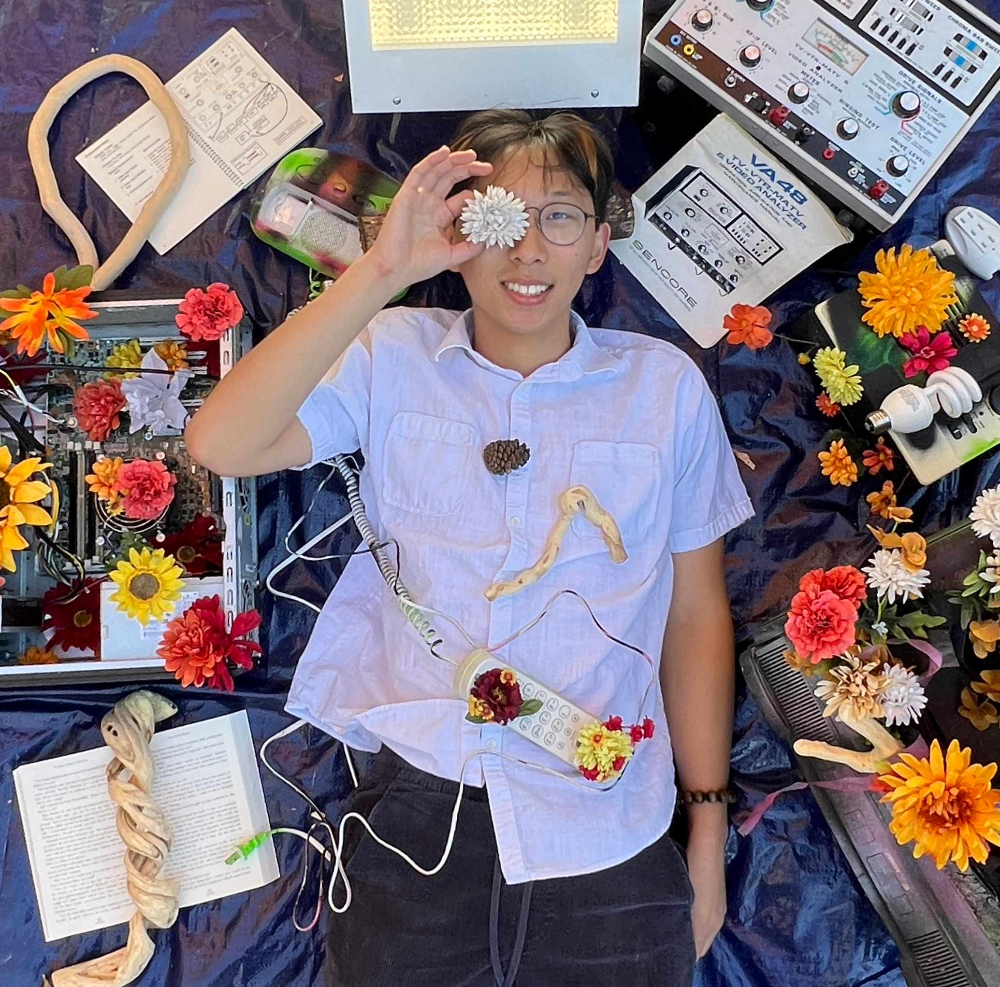
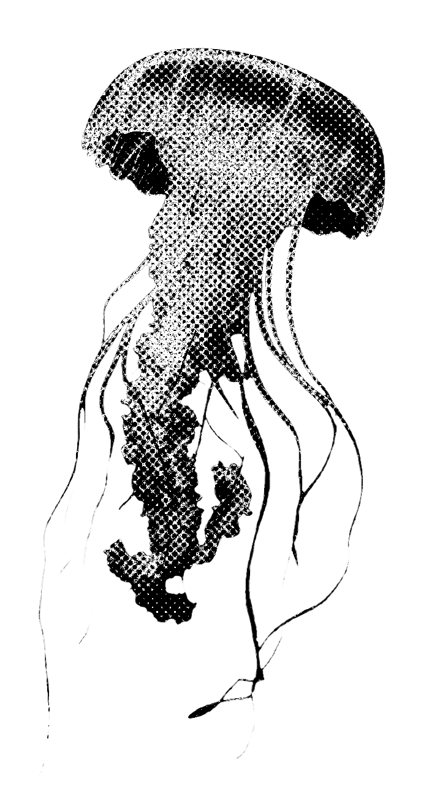
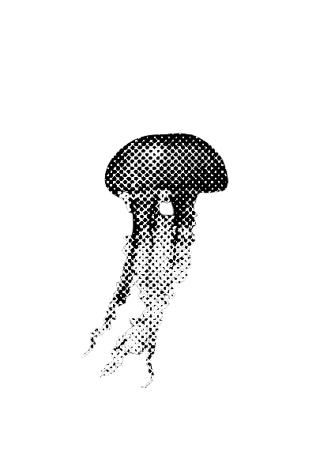

Composer / Software Engineer / Researcher
Jason
Zhang
Writing concert music and interactive systems that listen to each other — scores, signal processing, and the occasional line of Unreal Engine blueprint.
About
Composer, pianist, programmer

Can a meme save the world? Can computers write 18th-century counterpoint?
These are the kinds of questions I return to in my creative process. My work explores the intersections of internet culture, humor, technology, and classical music. I'm interested in treating the internet as a form of digital folklore: a constantly evolving collection of stories, symbols, jokes, and rituals that reveal how people make sense of the world.
On the technical side, I'm interested in machine learning — particularly transformer architectures and their applications to generative music — and I'm increasingly drawn to signal processing. My paper from ISMIR 2023 is available here.
Musically, I'm folding more improvisation and live electronics into my work — Max, Hydra, p5.js — and getting more comfortable with synthesis and production. I write mostly for the concert stage, with recent commissions from Hub New Music, Hypercube, TEMPO Ensemble, Bergamot Quartet, Attacca Quartet, Nova Linea Musica Trio, and loadbang, and pieces written for Natalia Kazaryan and Gabriel Cabezas. At Michigan I worked with Jayce Ogren and the Contemporary Directions Ensemble, and Mike Roest with the University Philharmonia Orchestra. I'm currently writing for the Unheard-Of Ensemble and the Akropolis Quintet.
I'm a recent graduate of the University of Michigan, where I studied composition and computer science. My composition mentors were Bright Sheng, Michael Daugherty, Roshanne Etezady, and Evan Chambers; I studied piano with Matthew Bengtson and chamber music with Matt Albert. I will be starting my master's in music technology at MIT in the fall, advised by Paris Smaragdis.

Recognition includes an MTNA National Composition Award, a Fromm Foundation Composition Fellowship, the 2025 Carlos Surinach BMI Composer Award, and a feature on Score Follower. I've also written a few pieces for the Michigan Daily on concert-going.
View CV- Website
- zhangjt1.github.io
- zhangjt [at] umich [dot] edu
- School
- MIT
- University of Michigan
- Degree
- MASc Music Technology
- BM Composition, BSE Computer Science
Other interests
Events
Upcoming performances
Attacca Quartet, part of the VAIL series. Tickets
New piece for two violas, harpsichord, and fixed media, for Emmanuel's master recital.


Computer science
Selected projects
VR Cheating Simulator
Built in Unreal Engine 5.4.2 with blueprint-driven interactive logic; planned in Jira. Assets from freesound, Quixel, and Sketchfab.
Ann Arbor Pokemon Go
Built in Unity 2022.3.50f1 with C# interactive logic; planned in Jira. Assets from freesound, the Unity Asset Store, and Sketchfab.
Melody Grove
An interactive AR spatial-audio playground. Built in Unity with C#; sound composed in Logic Pro X; planned in Jira. Dev log →
Hand Synth
A gestural synthesizer built with Max, FAUST, and Google's MediaPipe hand-tracking.
Portfolio
Selected works
Contact
Get in touch
For
Collaborations, commissions, and research conversations.